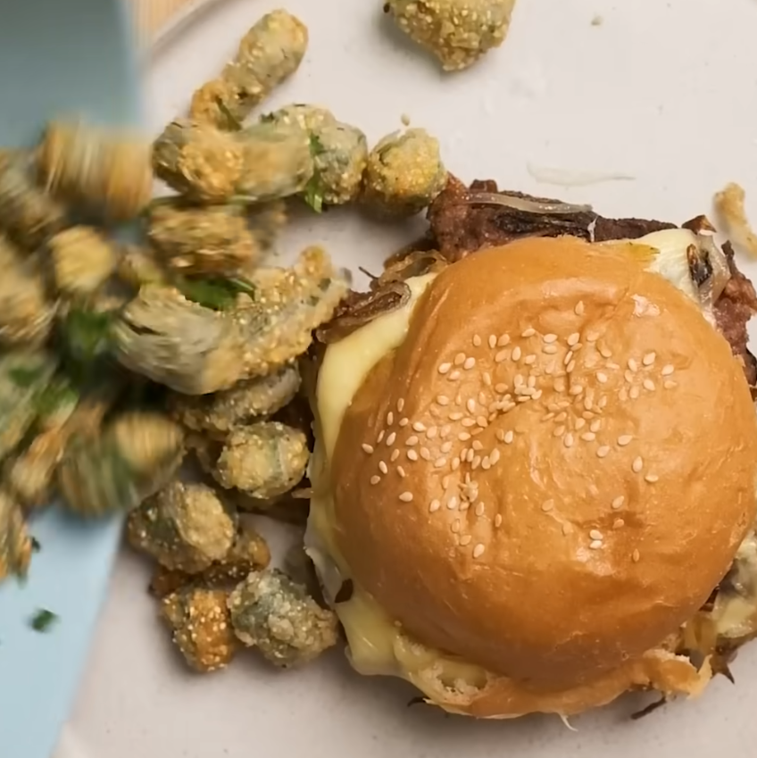

Oklahoma State Meal (One of them)

Hamburger with Fried Okra
This recipe is one of the state meals for Oklahoma. It consists of a hamburger with grilled onions and cheese with a side of breaded-fried okra.
Ingredients
- Milk
- Flour
- Cornmeal
- Black Pepper
- Parsley
Steps
- Douse okra in milk
- Put okra in an equal parts flour and cornmeal mixture with black pepper to your liking
- Fry in oil until golden brown, when finished garnish with parsley
- Make burger with grilled onions and cheese of your choice